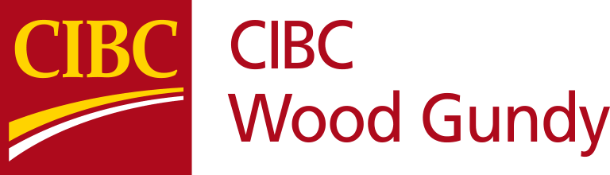
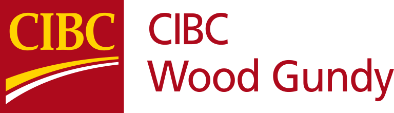

Gallant MacDonald
Data Scientist
Jan 2023 - Apr 2023, Toronto, Canada
Gallant MacDonald team is a multi-family office within Canadian Imperial Bank of Commerce (CIBC) – Wood Gundy. The team currently has over $1.8B under management, which makes it the fifth-largest investment advisory team within CIBC. During the term, I partook in numerous due diligence meetings with portfolio managers from big hedge funds such as TCC, Group RMC, and Hamilton Lane. After the meeting, produced a detailed memo identifying areas of concern such as liquidity options, distribution schedule, market correlation, and potential risk factors. Moreover, as a data scientist, I have also undertaken and completed numerous projects:
Fund Comparison Model
Developed the fund comparison model, where the algorithm takes up to 6 funds’ return data, produced graphs demonstrating the correlations, risk-reward trade-off, rolling active return, drawdown, and other statistics using pandas and python. The process is further automated with VBA code automatically importing these graphs into a PowerPoint deck.
Market Analysis Deck
Developed the market analysis automation report, where the algorithm uses Morningstar Analytics Lab to acquire enormous amounts of data on various fields, such as different funds’ price over equity ratio, US treasury yield, indices returns, etc. Then employs Python packages such as pandas for data cleaning and processing, and seaborn for graphing. Lastly, uses VBA macro to import the generated graphs into a PowerPoint deck for a visually pleasing presentation. The result is a 2-click algorithm that generates 150+ pages of market analysis presentation in less than 5 minutes.
Portfolio Review Automation Tool
Developed the review automation program, which makes API calls to Croesus and SharePoint to retrieve data, then input those data into an Excel file with macros that produce reports. A GUI was also developed for this program using PyQt5 with multi-threading capabilities using QThread. The program decreases the average time for creating a portfolio review report from 30 minutes to less than 5 minutes.